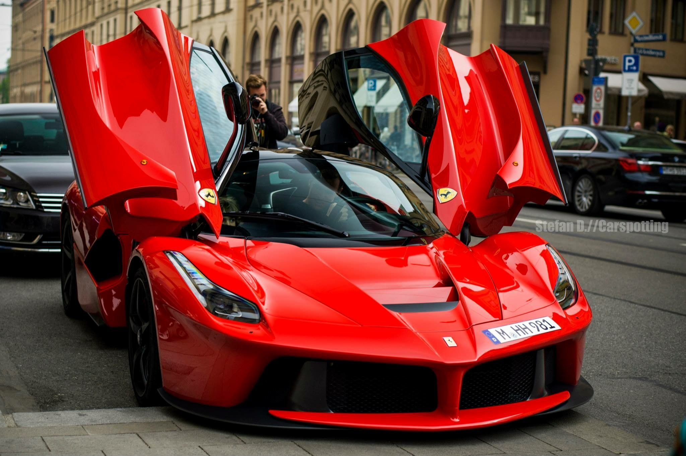
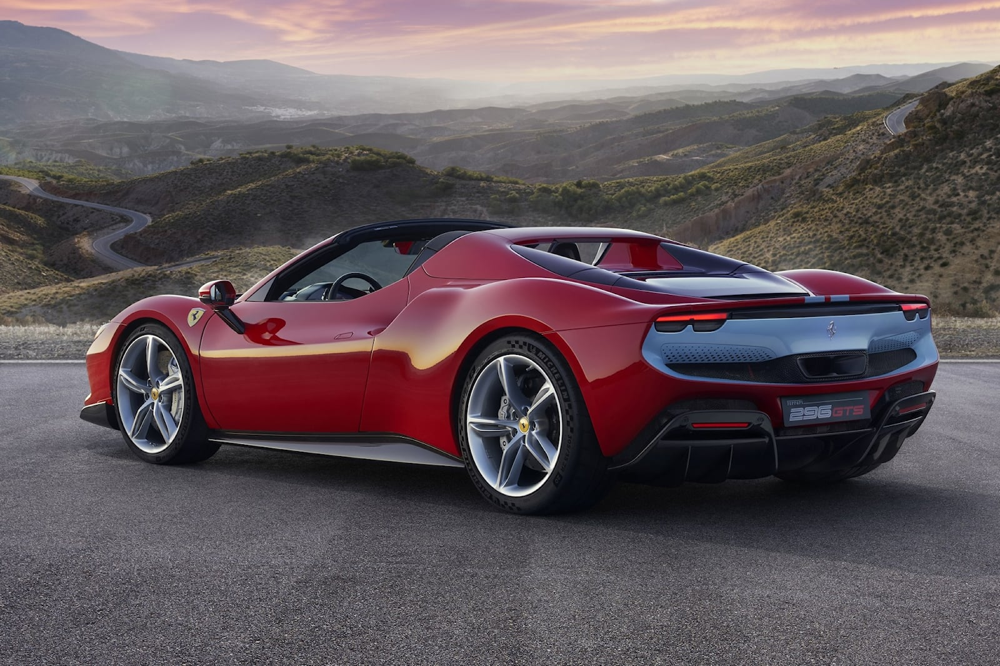
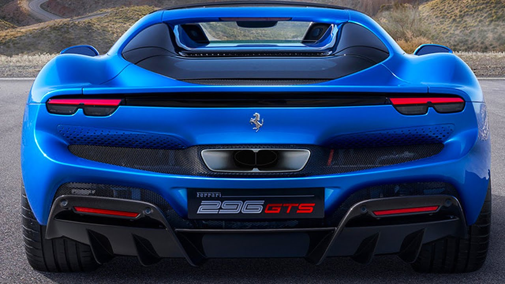

Гоночная команда, именуемая «Скудерия Феррари» (Scuderia Ferrari) была основана Энцо Феррари в 1929 году. Начала производить транспортные средства только в 1947 году[1]. Fiat SpA приобрела 50 % Ferrari в 1969 году и расширила свою долю до 90 % в 1988 году. В октябре 2014 года Fiat Chrysler Automobiles NV (FCA) объявила о своих намерениях отделить Ferrari SpA от FCA; на момент объявления FCA принадлежало 90 % Ferrari. Разделение началось в октябре 2015 года с реструктуризации, в результате которой Ferrari NV (компания, зарегистрированная в Нидерландах) стала новой холдинговой компанией группы Ferrari, и последующая продажа FCA 10 % акций в ходе IPO и одновременный листинг акций на Нью-Йоркской фондовой бирже . На оставшихся этапах разделения доля FCA в бизнесе Ferrari была распределена среди акционеров FCA, 10 % из которых по-прежнему принадлежат Пьеро Феррари. Выделение было завершено 3 января 2016 года.
  